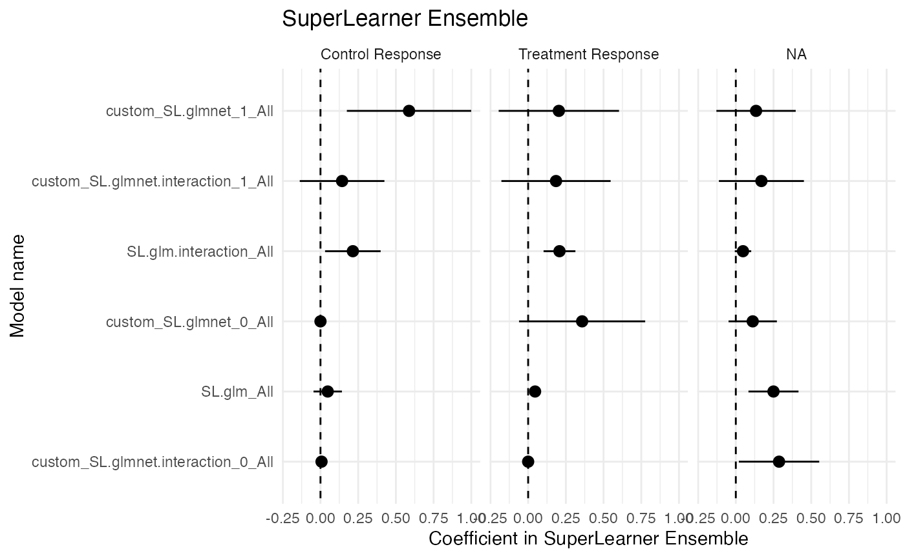
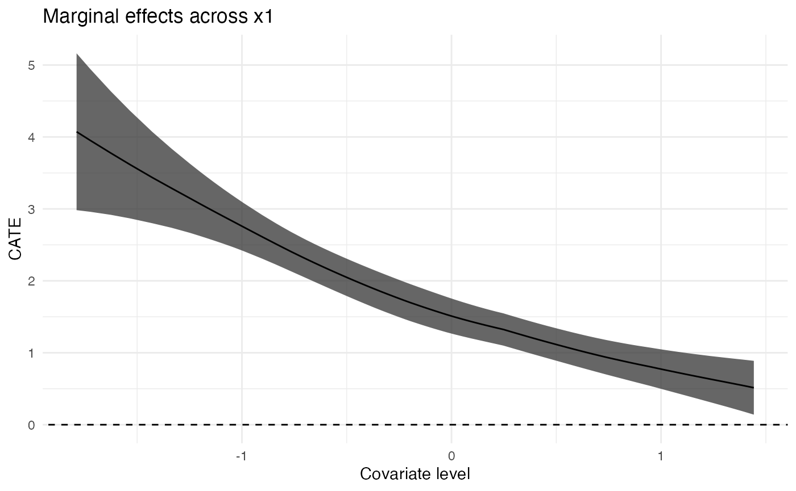
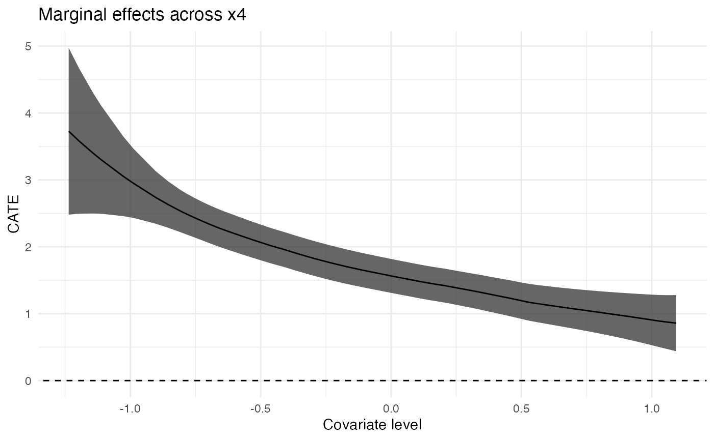
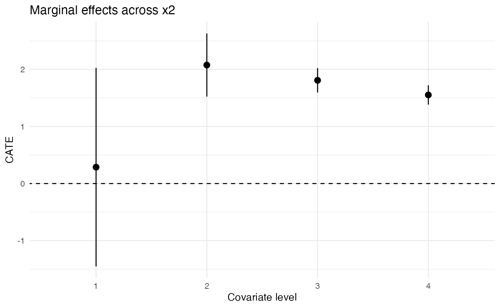

HTE Analysis on Observational Data
Drew Dimmery (ddimmery@univie.ac.at)
04 February, 2022
Source:vignettes/observational_analysis.Rmd
observational_analysis.RmdIntroduction
In this example analysis, I will demonstrate how to run an analysis of heterogeneous treatment effects in an observational setting using the methods of Kennedy (2020).
This analysis will focus on using machine learning ensembles (through SuperLearner) to estimate nuisance functions and then provide a tibble of estimates of conditional treatment effects along with their associated standard errors.
Simulate data
If real data is used, simply replace this block with an appropriate readr::read_csv call or equivalent, creating a tibble. I will assume this tibble is stored as data for the remainder of this document.
Note that datatypes can be either continuous or discrete, and that there can be columns in the tibble that are not included in any resulting anayses.
set.seed(100)
n <- 1000
data <- tibble(
uid = 1:n
) %>%
mutate(
x1 = rnorm(n),
x2 = factor(sample(1:4, n, prob = c(1 / 100, 39 / 100, 1 / 5, 2 / 5), replace = TRUE)),
x3 = factor(sample(1:3, n, prob = c(1 / 5, 1 / 5, 3 / 5), replace = TRUE)),
x4 = (x1 + rnorm(n)) / 2,
x5 = rnorm(n),
ps = plogis(x1 * 0.3 - as.double(x2) * 0.25 + x5 * 0.5),
a = rbinom(n, 1, ps),
y = (
a + x1 - a * (x1 - mean(x1)) + (4 * rbinom(n, 1, 0.5) - 1) * a * (x2 == 2) +
a * (x2 == 3) + 0.5 * a * (x2 == 4) +
0.25 * rnorm(n)
),
w = 0.1 + rexp(n, 1 / 0.9)
)Define Recipe
Propensity score and Outcome Model
We estimate the propensity score and outcome (T-learner) plugin estimates using an ensemble of machine learning models, including a wide array of model complexities from linear models, GAMs, regularized regressions. In this example, non-linear models are not included (due to runtime), but they could easily be added by uncommenting the associated lines.
Each individual component of the model provides a list of hyperparameters, over which a full cross-product is taken and all resulting models are estimate. For instance, SL.glmnet sweeps over one hyperparameter (the mixing parameters between ridge and Lasso). A model with each of the hyper-parameter values will be estimated and incorporated into the ensemble. Note that SL.glmnet automatically tunes the regularization parameter using cv.glmnet, so this is not included as a hyperparameter.
Quantities of interest
Quantities of Interest determine how results are reported to the user. You can think about this as determining, for instance how results should be plotted in a resulting chart.
For simplicity, this example simply provides results in one of two ways: - Discrete covariates are stratified and the conditional effect is plotted at each distinct level of the covariate. - Continuous covariates have the effect surface estimated using local-linear regression via nprobust of Calonico, Cattaneo and Farrell (2018). See, similarly, Kennedy, Ma, McHugh and Small (2017) for justification of this approach. Results are obtained for a grid of 100 quantiles across the domain of the covariate.
An additional quantity of interest provided is the variable importance of a learned joint model of conditional effects (over all covariates). The approach implemented is described in Williamson, Gilbert, Carone and Simon (2020).
hte_cfg <- basic_config() %>%
add_propensity_score_model("SL.glm.interaction") %>%
add_propensity_score_model("SL.glmnet", alpha = c(0.05, 0.15, 0.2, 0.25, 0.5, 0.75)) %>%
add_propensity_score_model("SL.glmnet.interaction", alpha = c(0.05, 0.15, 0.2, 0.25, 0.5, 0.75)) %>%
add_outcome_model("SL.glm.interaction") %>%
add_outcome_model("SL.glmnet", alpha = c(0.05, 0.15, 0.2, 0.25, 0.5, 0.75)) %>%
add_outcome_model("SL.glmnet.interaction", alpha = c(0.05, 0.15, 0.2, 0.25, 0.5, 0.75)) %>%
# add_outcome_model("SL.ranger", num.trees = c(25, 50, 100, 250), splitrule = c("variance", "extratrees")) %>%
# add_outcome_model("SL.xgboost", ntrees = c(50, 100, 250, 500), maxdepth = c(1, 3, 5), shrinkage = c(0.1, 0.01)) %>%
add_effect_model("SL.glm.interaction") %>%
add_effect_model("SL.glmnet", alpha = c(0.05, 0.15, 0.2, 0.25, 0.5, 0.75)) %>%
add_effect_model("SL.glmnet.interaction", alpha = c(0.05, 0.15, 0.2, 0.25, 0.5, 0.75)) %>%
add_moderator("Stratified", x2, x3) %>%
add_moderator("KernelSmooth", x1, x4, x5) %>%
add_vimp(sample_splitting = FALSE) ->
hte_cfg## Super Learner## Version: 2.0-28## Package created on 2021-05-04Estimate Models
To actually perform the estimation, the following will be sufficient. Note that the configuration of covariate names at the top of the document makes all of this a little more complex with all the curly-brackets and bangs.
data %>%
attach_config(hte_cfg) %>%
make_splits(uid, .num_splits = 4) %>%
produce_plugin_estimates(
y,
a,
x1, x2, x3, x4, x5,
) -> prepped_data
construct_pseudo_outcomes(prepped_data, y, a) %>%
estimate_QoI(x1, x2, x3, x4, x5) -> results
results## # A tibble: 401 × 6
## estimand term value level estimate std_error
## <chr> <chr> <dbl> <chr> <dbl> <dbl>
## 1 MCATE x1 -1.74 NA 3.69 0.247
## 2 MCATE x1 -1.63 NA 3.55 0.228
## 3 MCATE x1 -1.53 NA 3.43 0.211
## 4 MCATE x1 -1.44 NA 3.33 0.197
## 5 MCATE x1 -1.37 NA 3.25 0.185
## 6 MCATE x1 -1.32 NA 3.18 0.176
## 7 MCATE x1 -1.27 NA 3.13 0.169
## 8 MCATE x1 -1.21 NA 3.07 0.161
## 9 MCATE x1 -1.17 NA 3.03 0.155
## 10 MCATE x1 -1.12 NA 2.97 0.148
## # … with 391 more rowsATEs
## # A tibble: 1 × 6
## estimand term value level estimate std_error
## <chr> <chr> <dbl> <chr> <dbl> <dbl>
## 1 SATE NA NA NA 1.87 0.0787Plots
Plot Ensemble Coefficients
filter(results, grepl("SL coefficient", estimand)) %>%
mutate(level = factor(level, levels = c("Control Response", "Treatment Response"))) %>%
ggplot(aes(
x = reorder(term, estimate),
y = estimate,
ymin = estimate - 1.96 * std_error,
ymax = estimate + 1.96 * std_error
)) +
geom_abline(intercept = 0, slope = 0, linetype = "dashed") +
geom_pointrange() +
expand_limits(y = 0) +
scale_x_discrete("Model name") +
scale_y_continuous("Coefficient in SuperLearner Ensemble") +
facet_wrap(~level) +
coord_flip() +
ggtitle("SuperLearner Ensemble") +
theme_minimal()
Plot risk for each submodel
filter(results, grepl("SL risk", estimand)) %>%
mutate(level = factor(level, levels = c("Control Response", "Treatment Response", "Effect Surface"))) %>%
ggplot() +
geom_abline(intercept = 0, slope = 0, linetype = "dashed") +
geom_pointrange(
aes(
x = reorder(term, -estimate),
y = estimate,
ymin = estimate - 1.96 * std_error,
ymax = estimate + 1.96 * std_error)
) +
expand_limits(y = 0) +
scale_x_discrete("Model name") +
scale_y_continuous("CV Risk in SuperLearner Ensemble") +
facet_wrap(~level, scales = "free_x") +
coord_flip() +
ggtitle("Submodel Risk Estimates") +
theme_minimal()
Plot VIMP
ggplot(filter(results, estimand == "VIMP")) +
geom_abline(intercept = 0, slope = 0, linetype = "dashed") +
geom_pointrange(
aes(x = term, y = estimate, ymin = estimate - 1.96 * std_error, ymax = estimate + 1.96 * std_error)) +
expand_limits(y = 0) +
scale_x_discrete("Covariate") +
scale_y_continuous("Reduction in R² from full model") +
coord_flip() +
ggtitle("Covariate Importance") +
theme_minimal()
Plot Continuous Covariates’ MCATE
for (cov in c("x1", "x4", "x5")) {
ggplot(filter(results, estimand == "MCATE", term == cov)) +
geom_abline(intercept = 0, slope = 0, linetype = "dashed") +
geom_ribbon(
aes(x = value, ymin = estimate - 1.96 * std_error, ymax = estimate + 1.96 * std_error), alpha = 0.75
) +
geom_line(
aes(x = value, y = estimate)
) +
expand_limits(y = 0) +
scale_x_continuous("Covariate level") +
scale_y_continuous("CATE") +
ggtitle(paste("Marginal effects across", cov)) +
theme_minimal() -> gp
print(gp)
}
Plot Discrete Covariates’ MCATE
for (cov in c("x2", "x3")) {
ggplot(filter(results, estimand == "MCATE", term == cov)) +
geom_abline(intercept = 0, slope = 0, linetype = "dashed") +
geom_pointrange(
aes(x = level, y = estimate, ymin = estimate - 1.96 * std_error, ymax = estimate + 1.96 * std_error)) +
expand_limits(y = 0) +
scale_x_discrete("Covariate level") +
scale_y_continuous("CATE") +
ggtitle(paste("Marginal effects across", cov)) +
theme_minimal() -> gp
print(gp)
}
Session Info
print(sessionInfo())## R version 4.1.2 (2021-11-01)
## Platform: x86_64-apple-darwin17.0 (64-bit)
## Running under: macOS Big Sur 10.16
##
## Matrix products: default
## BLAS: /Library/Frameworks/R.framework/Versions/4.1/Resources/lib/libRblas.0.dylib
## LAPACK: /Library/Frameworks/R.framework/Versions/4.1/Resources/lib/libRlapack.dylib
##
## locale:
## [1] en_US.UTF-8/en_US.UTF-8/en_US.UTF-8/C/en_US.UTF-8/en_US.UTF-8
##
## attached base packages:
## [1] stats graphics grDevices utils datasets methods base
##
## other attached packages:
## [1] nnls_1.4 SuperLearner_2.0-28 dplyr_1.0.7
## [4] ggplot2_3.3.5 tidyhte_0.2.0
##
## loaded via a namespace (and not attached):
## [1] Rcpp_1.0.8 lattice_0.20-45 WeightedROC_2020.1.31
## [4] prettyunits_1.1.1 glmnet_4.1-3 rprojroot_2.0.2
## [7] digest_0.6.29 foreach_1.5.2 utf8_1.2.2
## [10] R6_2.5.1 backports_1.4.1 evaluate_0.14
## [13] highr_0.9 pillar_1.7.0 rlang_1.0.1
## [16] progress_1.2.2 data.table_1.14.2 gam_1.20
## [19] jquerylib_0.1.4 Matrix_1.3-4 checkmate_2.0.0
## [22] rmarkdown_2.11 pkgdown_2.0.2 labeling_0.4.2
## [25] textshaping_0.3.6 desc_1.4.0 splines_4.1.2
## [28] stringr_1.4.0 vimp_2.2.5 munsell_0.5.0
## [31] compiler_4.1.2 xfun_0.29 pkgconfig_2.0.3
## [34] systemfonts_1.0.2 nprobust_0.4.0 shape_1.4.6
## [37] htmltools_0.5.2 tidyselect_1.1.1 tibble_3.1.6
## [40] quadprog_1.5-8 codetools_0.2-18 fansi_1.0.2
## [43] crayon_1.4.2 withr_2.4.3 MASS_7.3-54
## [46] grid_4.1.2 jsonlite_1.7.3 gtable_0.3.0
## [49] lifecycle_1.0.1 magrittr_2.0.2 scales_1.1.1
## [52] cli_3.1.1 stringi_1.7.6 cachem_1.0.6
## [55] farver_2.1.0 fs_1.5.2 bslib_0.3.1
## [58] ellipsis_0.3.2 ragg_1.1.3 generics_0.1.2
## [61] vctrs_0.3.8 iterators_1.0.13 tools_4.1.2
## [64] glue_1.6.1 purrr_0.3.4 hms_1.1.1
## [67] survival_3.2-13 fastmap_1.1.0 yaml_2.2.2
## [70] colorspace_2.0-2 memoise_2.0.1 knitr_1.37
## [73] sass_0.4.0 quickblock_0.2.0 distances_0.1.8